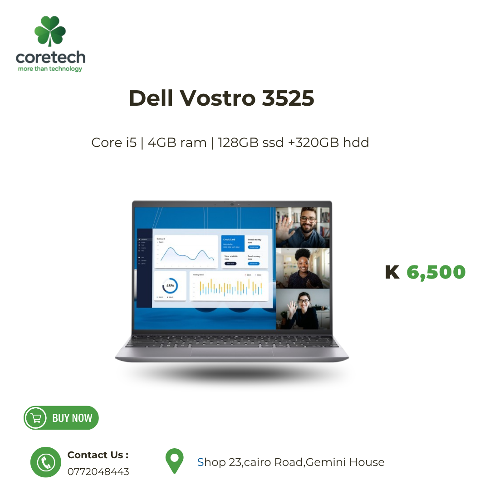
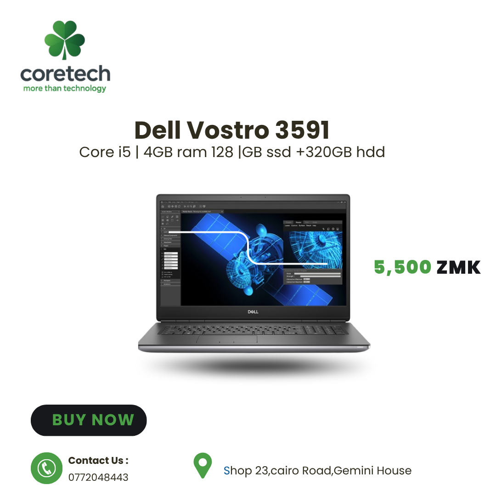
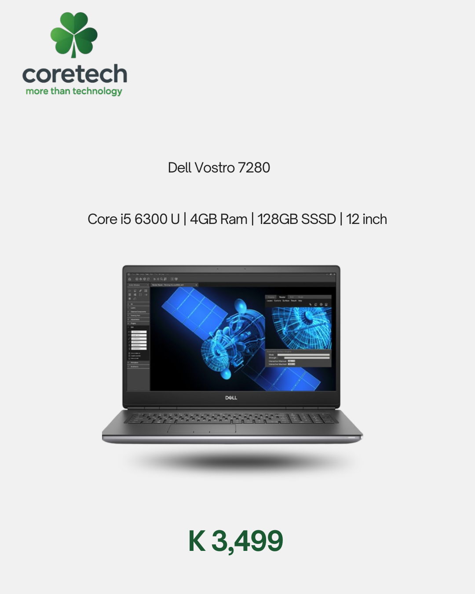
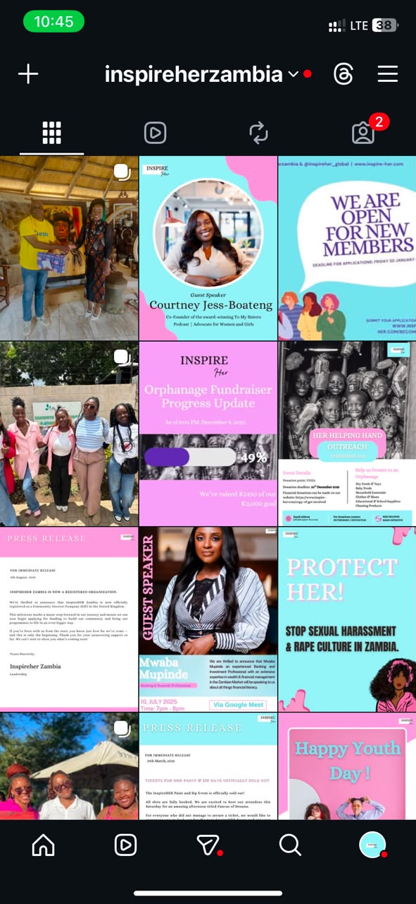

Postpartum Support App
An offline-first postpartum wellbeing app with EPDS screening, history, support resources, and a connected backend. Ongoing final-year project.
I build practical digital experiences and create content that connects people with ideas, products, and causes. I'm a final-year Computer Science student at the University of Zambia.
I'm majoring in Software Engineering at UNZA. My work spans mobile apps, web development, data projects, and community initiatives. I enjoy turning a complex problem into something people can actually use.
An offline-first postpartum wellbeing app with EPDS screening, history, support resources, and a connected backend. Ongoing final-year project.
Collaborative data mining and warehousing project bringing together local council information, including CDF allocations and projects.
A decision support concept for smallholder farmers, exploring useful guidance for crop planning and climate-aware choices.
I manage InspireHER Zambia's Instagram presence and create graphics and run ads for Core Tech. These selected examples show product promotions, campaign posts, and short video content. I also support publicity for student organisations.




Portfolio archive: product details and prices shown in the original graphics reflect those posts and are not current sales offers.
I work across the product journey, from understanding the problem to implementing and testing a solution.
I bring communication and design into technical work.
Interested in my projects or a collaboration? Reach out through GitHub.
Connect on GitHub ↗